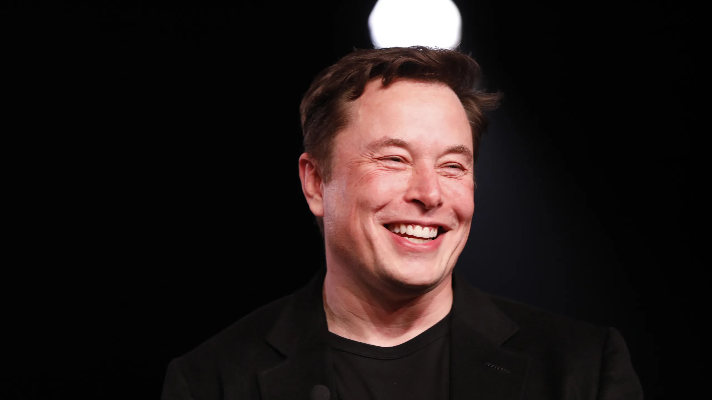

Elon Musk
The man who Invented Tesla Car
Elon Reeve Musk is a business magnate and investor. He is the founder, chairman, CEO, and
chief technology officer of SpaceX; angel investor, CEO and product architect of Tesla, Inc.; owner and CTO of
Twitter; founder of the Boring Company; co-founder of Neuralink and OpenAI; and president of the Musk Foundation
Read More
About Tesla, Inc.
Tesla, Inc. is an American electric vehicle and clean energy company founded in 2003. The company's mission is to accelerate the world's transition to sustainable energy.
Tesla is known for its revolutionary electric vehicles, including the Tesla Roadster, Model S, Model X, Model 3, and Model Y. The company's vehicles are celebrated for their performance, safety, and cutting-edge technology.
Autopilot and Full Self-Driving
Tesla has been a leader in autonomous driving technology. Their "Autopilot" feature offers advanced driver-assistance capabilities, while "Full Self-Driving" aims to achieve full autonomy in Tesla vehicles through over-the-air software updates.
Gigafactories
Tesla operates several Gigafactories worldwide, including those in the United States, China, and Europe. These massive factories produce batteries, electric drivetrains, and assemble vehicles, enabling Tesla to scale up production and reduce costs.
Energy Products
In addition to electric vehicles, Tesla offers a range of clean energy products:
- Tesla Solar Panels - Solar energy solutions for homes and businesses
- Tesla Solar Roof - Roof tiles with integrated solar cells
- Tesla Powerwall - Home battery storage for solar energy
- Tesla Megapack - Large-scale energy storage solutions
Environmental Focus
As part of its commitment to sustainability, Tesla's efforts contribute to reducing carbon emissions and combating climate change. The company's vision aligns with a greener and more sustainable future.
Supercharger Network
Tesla has established a global network of fast-charging stations called Superchargers, providing Tesla owners with convenient access to charging infrastructure during long-distance travel.
Elon Musk Timeline:
1971: Birth and Early Life
Elon Musk was born on June 28, 1971, in Pretoria, South Africa.
1988: Move to Canada
Musk moved to Canada to attend Queen's University in Kingston, Ontario.
1995: Zip2 Corporation
Musk co-founded Zip2, a software company that provided business directories and maps for newspapers. Compaq acquired Zip2 in 1999 for nearly $300 million.
1999: X.com and PayPal
Musk founded X.com, an online payment company, which later became known as PayPal after a merger. In 2002, eBay acquired PayPal for $1.5 billion.
2002: Space Exploration with SpaceX
Musk founded SpaceX (Space Exploration Technologies Corporation) with the goal of reducing space transportation costs and making space exploration more feasible.
2004: Electric Cars with Tesla
Musk became the chairman of Tesla Motors (now Tesla, Inc.) and played a vital role in developing electric vehicles for the mass market.
2006: SolarCity
Musk co-founded SolarCity, a solar energy products and services company, to promote clean and renewable energy solutions.
2008: Falcon 1 Successful Launch
SpaceX achieved its first successful launch of the Falcon 1 rocket, becoming the first privately-funded company to put a liquid-fueled rocket into orbit.
2012: Dragon Capsule and ISS
SpaceX's Dragon spacecraft became the first commercial vehicle to dock with the International Space Station (ISS), marking a significant milestone in space travel.
2015: Tesla Model X and Gigafactory
Tesla launched the Model X electric SUV, and construction began on the Tesla Gigafactory, aimed at increasing battery production for electric vehicles.
2017: Falcon Heavy Launch
SpaceX successfully launched the Falcon Heavy, the most powerful operational rocket in the world at the time, and made headlines by launching Musk's Tesla Roadster into space.
2020: Crewed Dragon Mission
SpaceX's Crew Dragon spacecraft carried astronauts to the ISS, marking the first crewed launch from U.S. soil since the Space Shuttle program ended in 2011.
2021: Becoming the World's Richest Person
In January 2021, Elon Musk briefly became the world's richest person, surpassing Jeff Bezos, the founder of Amazon.
2021: Tesla's $1 Trillion Valuation
Tesla's market value exceeded $1 trillion in 2021, making it one of the most valuable companies in the world.